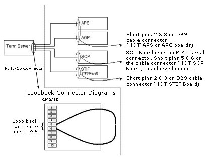

Proprietary to General Electric Company
Direction 5440000, Rev# 5
Signa HDxt Service Methods
Module Version 1.0, Version Date 4/26/07
Proprietary to General Electric Company |
Diagnostics >> Host >> Terminal Server Diagnostics >> Loopback
The purpose of the Terminal Server Loopback diagnostic is to verify the Terminal Server hardware is functioning properly. In addition, the test identifies port connections and whether they are attached properly.
Terminal Server Hardware
Ethernet Port & cable originating from the PC Host via the Hub
Communications to the Terminal Server Ports 1-4 to the end-devices
Port faults can be isolated
Cable Failures can be isolated
End-device communications failures can be isolated
Hardware
PC Linux Host
Network Hub
Terminal Server
MGD Chassis (minimum hardware required to bring up the chassis & allow TPS resets)
Proper cabling
Loopback connector/connection
Software
PC Host software
MGD Chassis software required to bring up the chassis (applications are not required).
None
Systematic Top-Down Approach
This approach begins with the Terminal Server connected "normally". Faults are isolated based on test results, interpretation of the results, and subsequent action(s) suggested in the table provided within the Test Results section below.
Click [Run].
If it passes the Terminal Server is working properly and further testing is not required.
If the results indicate it is not working properly:Examine the test scenario (i.e., what is connected to the Terminal Server. Search the Test Results section below for matching criteria. Perform the action steps necessary to isolate problems).
Bottom-Up Approach
This approach expands testing beginning with communications to the Terminal Server, and concluding with confirmation of connectivity to the end-devices.
Terminal Server Communications
Start with the Terminal Server attached to the PC Linux Host via the Network Hub. The connection should be made to the Terminal Server's Ethernet port. Nothing else should be attached to the Terminal Server's ports.
Click [Run].
If communications problems to the Terminal Server exist, stop the test and run the Terminal Server Communications Diagnostic in order to better isolate the fault.
Stop this procedure. Run
Examine the Test Results and identify what was detected on Ports 1-4. All should report "Timeout"
If any ports report something other than "Timeout", stop this procedure. There is an internal problem with the port(s).
Attach the loopback connector to the Terminal Server's Port 1 (see below).

Click [Run] to re-run the test.
If "Loopback" is not reported for the corresponding port, stop this procedure. There is an internal problem with the port or a problem exists with the connector/serial cable.
Repeat steps 6 through 8 for Ports 2, 3, and 4.
Alternately, to test ports 1, 2, or 4 attach a DB9 cable to the tested port and short pins 2 & 3 together (see diagram above).
To test Port 3 attach an RJ45 serial cable to the tested port and short pins 5 & 6 together (see diagram above).
| NOTE: | If steps 6-8 fail for all ports it may be due to a faulty loopback connector. Repeat steps 6-8 for all four ports using a different loopback connector. |
Cables from ports to end-devices
Attach the cables to each of the ports. Do not attach the cables to the end-devices. Also remove the shorts from all cables.
Click [Run].
A "Timeout" should be reported for each of the ports. If not, there is a problem with the corresponding cable(s).
End-devices
Attach
Port 1 to the APS processor;
Port 2 to the AGP processor;
Port 3 to the SCP processor; and
Port 4 to the reset line on the STIF board.
Click [Run].
Ports 1-3 should report their respective processors. Port 4 should report "Timeout" (Presently, this is the proper response for the "Reset" line).
If the diagnostic does not report the expected results, a problem with the board may exist.
Expected Results are listed above in the Section 6.